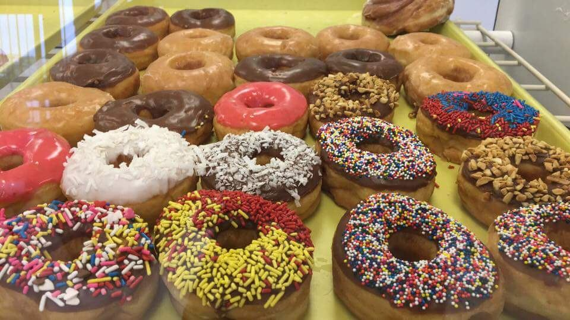
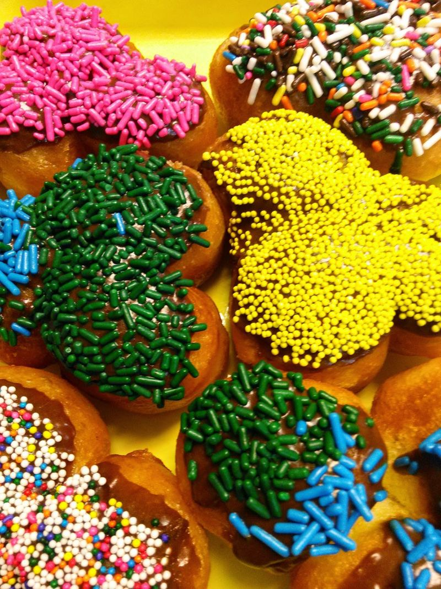
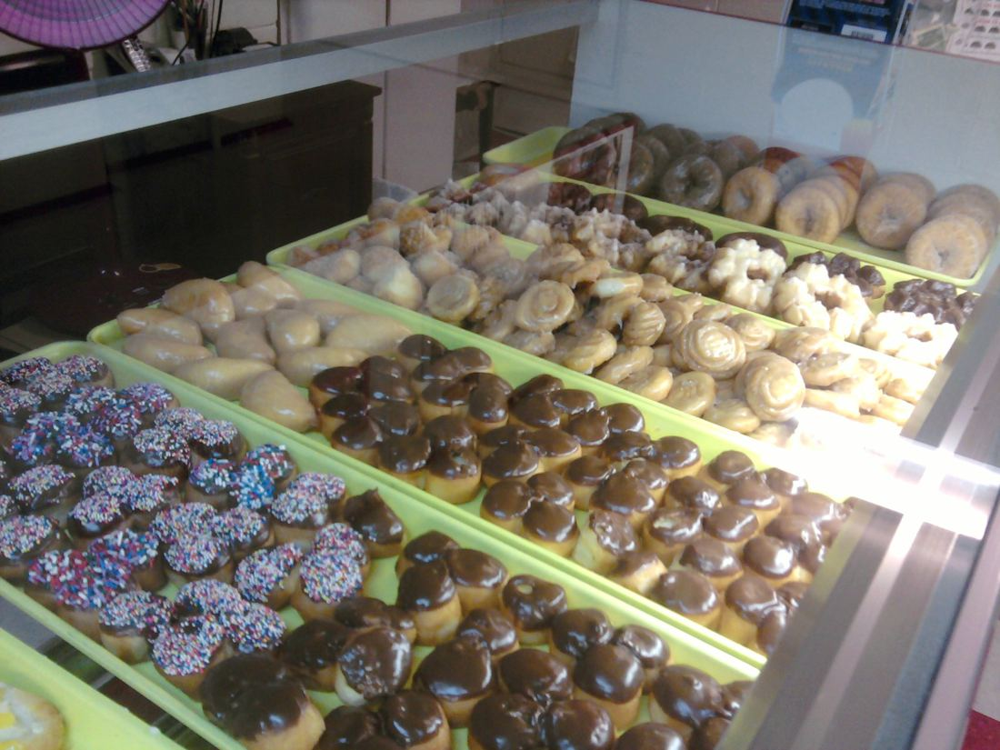
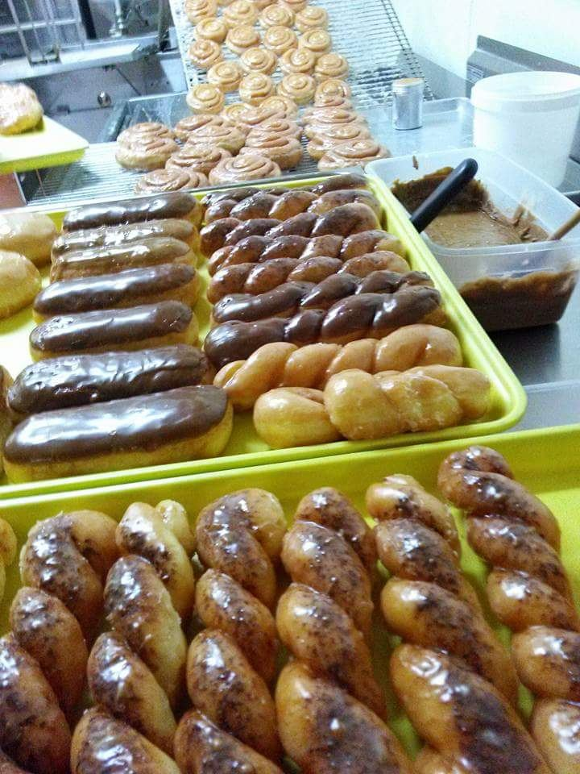
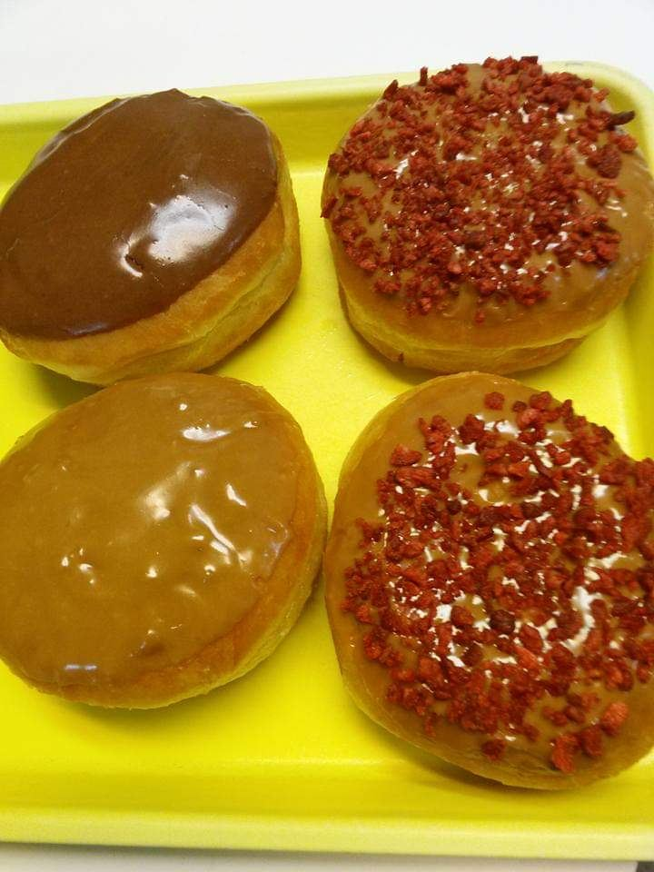
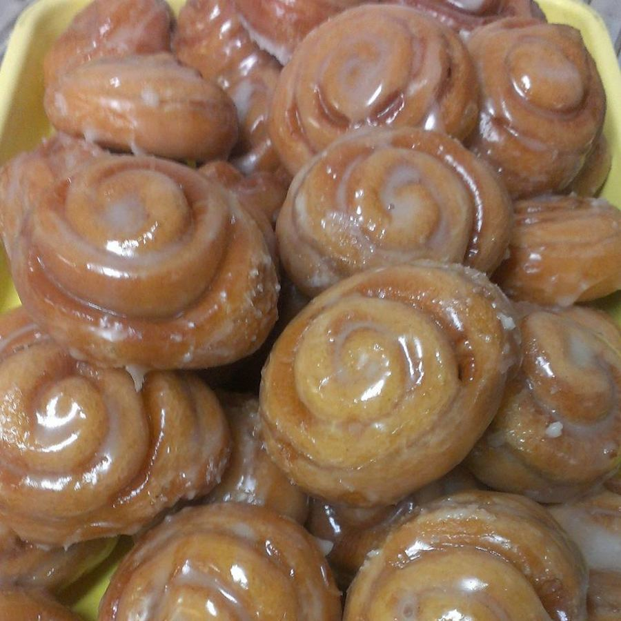
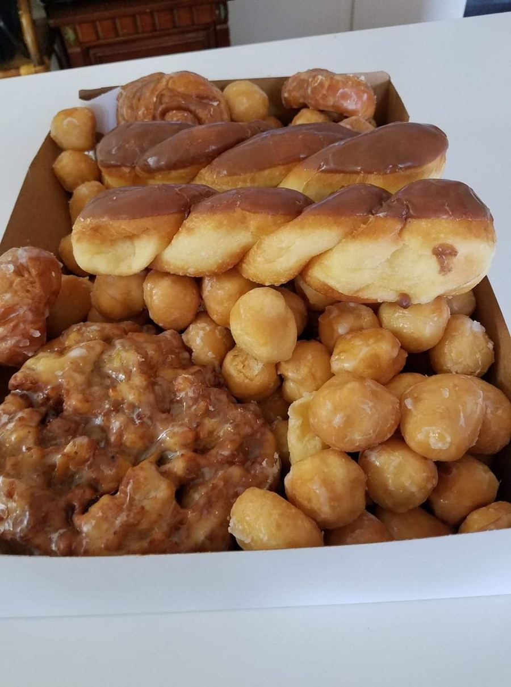
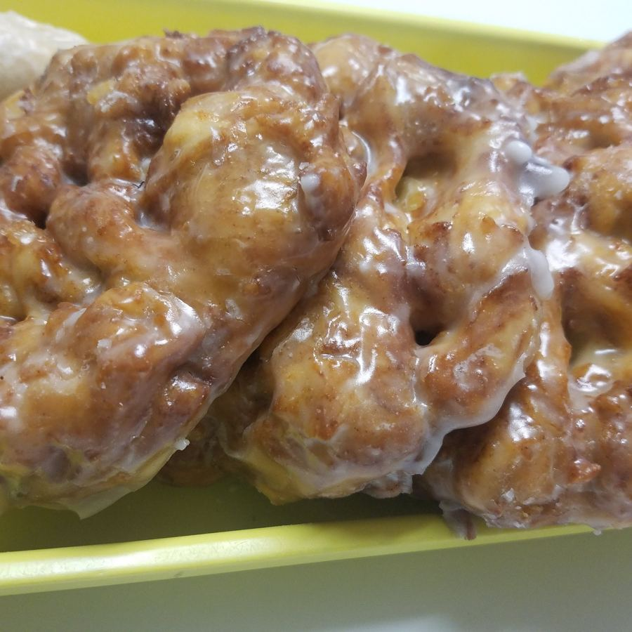
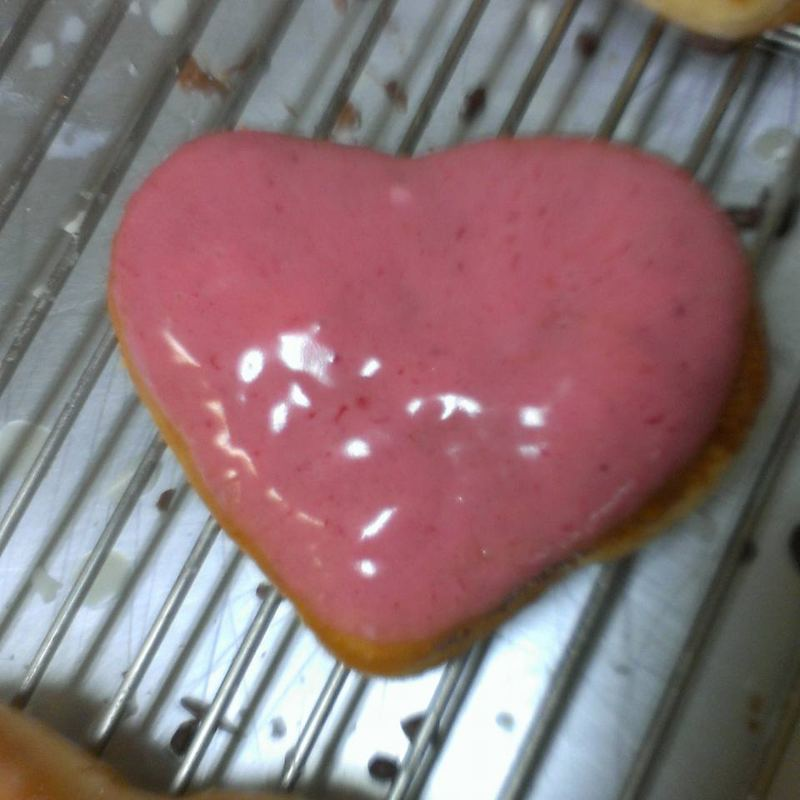

Glazed twists, sprinkle donut holes, fritters, and breakfast burritos, made fresh and out the door before lunch.
Call (817) 378-0188Hours








Every day 4 AM–12:30 PM
per public listing; confirm current hours
Sausage, egg, cheese and potato breakfast burritos are on the menu.